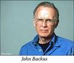
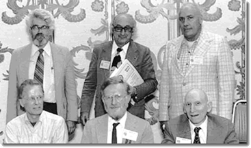

High-Level Languages

Machine and assembly language are low-level languages, tied to a specific CPU's instruction set. In the mid-1950s, John Backus lead a team at IBM which developed the first high-level programming language. FORTRAN (or the FORmula TRANslator), allowed scientists and engineers to write their own programs.COBOL (the COmmon Business Oriented Language), allowed accountants and bankers to write programs using a vocabulary with which they were comfortable. In 1958, John McCarthy at MIT built a third high-level language named LISP (the LISt Processing Language) to help him with his research into artificial intelligence.
These three high-level languages allowed non-computer specialists to write their own programs, but they were not general-purpose languages; scientists could not use COBOL to write code for NASA, and accountants could not use FORTRAN.
In 1960, the designers of FORTRAN, COBOL and LISP gathered together in Paris to remedy that, producing the AlgorithmicLanguage (ALGOL). Modern languages derive much of their syntax and many core concepts from ALGOL.

Many new languages followed rapidly in the next seven decades. Here are two:
- BASIC, the Beginner's All-purpose Symbolic Instruction Code, was developed at Dartmouth University in 1964. The professors Kemeny and Kurtz wanted to teach programming to university students using the new, interactive, time-share computers. BASIC was later the first language available on micro-computers, implemented by Bill Gates for the Altair. Even later, in the 1990s, Microsoft introduced Visual Basic, a graphical version, popular in the business world.
- In 1972, the Swiss computer scientist Nicholas Wirth felt that BASIC was teaching students bad programming habits, so he created the popular teaching language Pascal, (named after the philosopher, Blaise Pascal). Strongly influenced by Algol, Pascal enforced structured programming techniques. It was the first programming language taught in most university computing programs until about 2000. Wirth later designed Modula, Oberon, and Ada, a language still in wide use in avionics and in defense.
 This course content is offered under a
CC
Attribution Non-Commercial license. Content in this course
can be considered under this license unless otherwise noted.
This course content is offered under a
CC
Attribution Non-Commercial license. Content in this course
can be considered under this license unless otherwise noted.